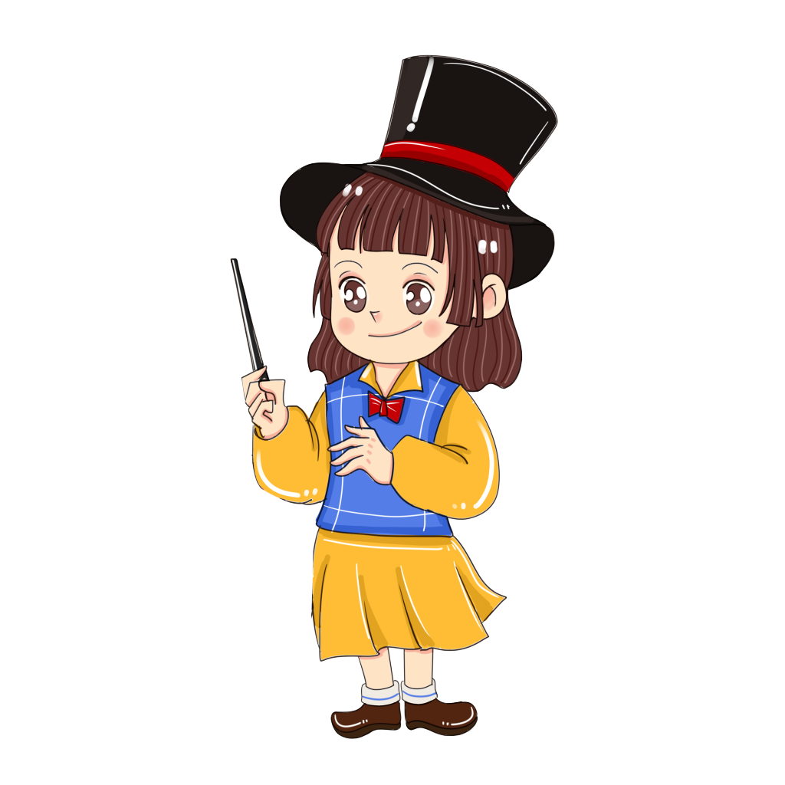

Luna
En un lejano reino llamado Encantia, donde la magia y la fantasía fluían libremente, vivía una joven llamada Luna. Luna era una soñadora empedernida y siempre creyó en la existencia de criaturas mágicas y lugares encantados.
Un día, mientras exploraba el bosque cercano a su hogar, Luna descubrió un antiguo libro con una cubierta de cuero desgastada. Al abrirlo, se encontró con un mapa que mostraba el camino hacia una tierra desconocida y misteriosa llamada Faëria.
Emocionada y llena de curiosidad, Luna decidió embarcarse en una aventura para descubrir el mundo mágico de Faëria. Siguiendo el mapa, atravesó bosques encantados, ríos de agua cristalina y montañas cubiertas de nieve resplandeciente.
Al llegar a Faëria, Luna quedó maravillada por la belleza que la rodeaba. Criaturas fantásticas como unicornios, hadas y duendes vivían en perfecta armonía. Los árboles bailaban al compás del viento y las flores desprendían un aroma embriagador.
Poco a poco, Luna fue descubriendo su propio poder mágico. Aprendió a comunicarse con los animales, a crear pequeños hechizos y a sanar con su toque. Los habitantes de Faëria la recibieron con los brazos abiertos y compartieron con ella su sabiduría ancestral.
Con el tiempo, Luna se convirtió en una guardiana de Faëria, protegiendo su magia y su equilibrio. Se unió a los unicornios para preservar los bosques, ayudó a las hadas a cuidar de las flores y guió a los duendes en la construcción de sus hogares.
Faëria se convirtió en su hogar, y Luna vivió allí durante muchos años, rodeada de amor y alegría. Pero siempre recordó su vida en el reino de Encantia y decidió regresar para compartir su conocimiento y su magia con los demás.
Cuando Luna volvió a Encantia, las personas quedaron asombradas por su habilidad para transformar la realidad y hacer realidad los sueños más profundos. Comenzó a enseñar a otros a despertar su propia magia interior y a creer en el poder de la fantasía.
Desde entonces, Encantia se convirtió en un lugar donde los sueños se hacían realidad y la magia florecía en cada rincón. Las personas aprendieron a encontrar la belleza en lo extraordinario y a vivir en armonía con la naturaleza y la fantasía.
Y así, el reino de Encantia y la tierra de Faëria se fusionaron en un vínculo eterno, recordándonos a todos que la magia existe en el corazón de aquellos que creen y que los sueños pueden llevarnos a lugares maravillosos si tenemos el valor de seguirlos.